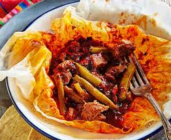

11.Estado De México

- Platillo: Mixiotes de carnero
- Ingredientes: Carne de carnero, chile guajillo, especias, hoja de maguey (mixiote).
- Historia: De origen prehispánico, su nombre viene del náhuatl “metl” (maguey) y “xiotl” (película).
- Dato curioso: Se cocinan tradicionalmente al vapor y envueltos en la piel del maguey.